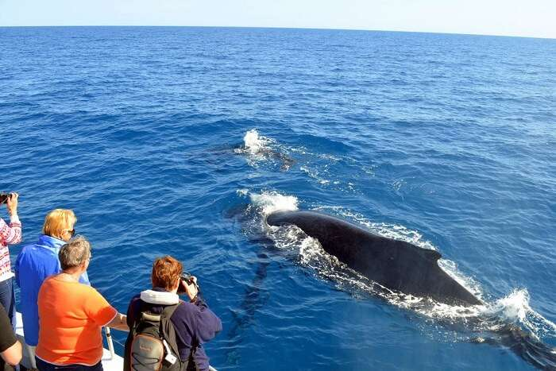
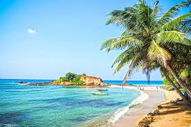

Mirissa is a small town on the south coast of Sri Lanka, located in the Matara District of the Southern Province. It is approximately 150 kilometres (93 mi) south of Colombo and is situated at an elevation of 4 metres (13 ft) above sea level. Mirissa's beach and nightlife make it a popular tourist destination. It is also a fishing port and one of the island's main whale and dolphin watching locations. Mirissa is the largest fishing port on the south coast and is known for its tuna, mullet, snapper and butterfish. In 1979 the first tourist accommodation was built however it wasn't until the mid-1990s that tourism to the town started to dramatically increase.[2] Mirissa was affected by the tsunami caused by the 2004 Indian Ocean earthquake, with numerous homes, guesthouses, shops, schools and temples destroyed or damaged and fourteen reported deaths.[2]
 